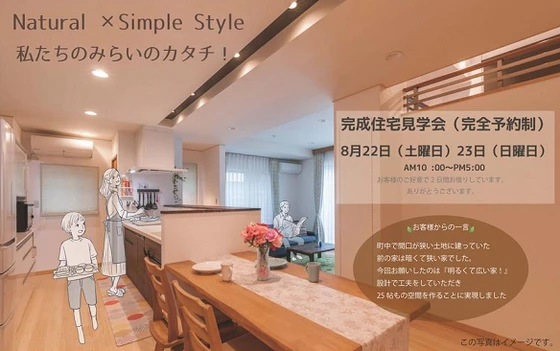
完成見学会のお知らせ
こんにちは。富山で自然素材にこだわるホンモノの家、フジ創アイノスです。 ８月２２日（土）、２３日（日）に高岡市内で完成見学会を開催します。 皆様の家づくりの参考にしていただきたく、施主様より２日間お借りしました。 町中の
続きを読む →FUJISOU AINOS JOURNAL
家づくりのこと、暮らしのこと。
日々の想いを、お伝えします。
新しい記事から 32・40ページ

こんにちは。富山で自然素材にこだわるホンモノの家、フジ創アイノスです。 ８月２２日（土）、２３日（日）に高岡市内で完成見学会を開催します。 皆様の家づくりの参考にしていただきたく、施主様より２日間お借りしました。 町中の
続きを読む →
こんにちは。富山で自然素材にこだわるホンモノの家、フジ創アイノスです。 夏真っただ中、皆様体調管理にお気を付けください。 夏の寝室の快適温度は25～28℃、快適湿度は50～60％といわれています。 人は夜寝ている間に体を
続きを読む →
こんにちは。富山で自然素材にこだわるホンモノの家、フジ創アイノスです。 前回iDeCoとつみたてNISAをご紹介しました。 例えば、あなたが30歳の共働きのご夫婦だとしたら、 ご主人には、iDeCoに毎月1万円、 つみた
続きを読む →こんにちは。富山で自然素材にこだわるホンモノの家、フジ創アイノスです。 家賃よりローンを上げるべきではないというお話の続きです。 もしいま賃貸にお住まいなら、いま払っている家賃の範囲内で 住宅ローンの返済額を設定すべきで
続きを読む →こんにちは。富山で自然素材にこだわるホンモノの家、フジ創アイノスです。 家を建てる誰もがたくさんのご要望をお持ちだと思いますが、 家はただ単に要望から出来上がるものではなく、 環境（敷地条件）に合わせ、予算を守りながら建
続きを読む →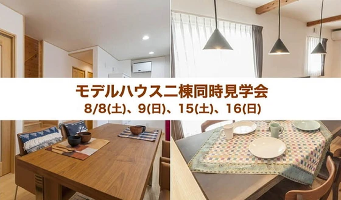
こんにちは。富山で自然素材にこだわるホンモノの家、フジ創アイノスです。 今日は各地で猛暑となるようです。屋内外に関わらず熱中症にご注意ください。 今日からお盆休みの方も多いと思います。 フジ創アイノスでは販売中のモデルハ
続きを読む →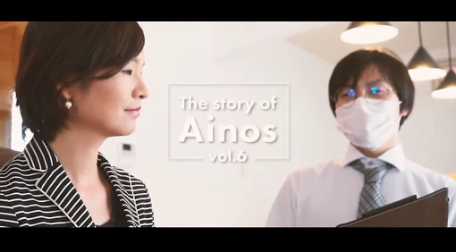
こんにちは。富山で自然素材にこだわるホンモノの家、フジ創アイノスです。 YouTubeのフジ創アイノスチャンネルに、新しい動画がアップされました。 https://www.youtube.com/watch?v=Gfsl
続きを読む →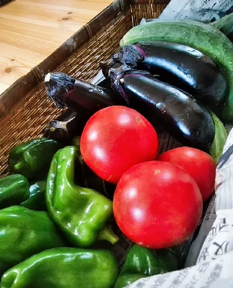
こんにちは。富山で自然素材にこだわるホンモノの家、フジ創アイノスです。 ようやく長かった梅雨が明け、夏らしくカラッと暑くなりましたね。 我が家には実家の畑で採れた夏野菜が届きはじめました。 今年の夏は猛暑といわれています
続きを読む →
こんにちは。富山で自然素材にこだわるホンモノの家、フジ創アイノスです。 前回の続きで、こちらの吹抜けの家のメリットについてお話します。 まずこちらの住まいは、朝から夕方までずっと 吹抜けの窓から光が入り続けます。 光を遮
続きを読む →こんにちは。富山で自然素材にこだわるホンモノの家、フジ創アイノスです。 こちらのお家は、南側接道の 日当たりが良い土地に建っているのですが、 その道が比較的交通量が多いため、 単純に南に大きな窓をつくってしまうと、 外か
続きを読む →こんにちは。富山で自然素材にこだわるホンモノの家、フジ創アイノスです。 明るく開放感がある家にするためには、 カーテンを閉めなくてもいい窓をつくりながら、 窓から入ってくる光を家全体に拡散させないといけません。 例えば、
続きを読む →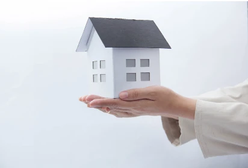
こんにちは。富山で自然素材にこだわるホンモノの家、フジ創アイノスです。 マイホームブルーという言葉をご存じでしょうか。 マイホームの計画中や購入後に憂鬱な気持ちになることをいいます。 その原因は、住宅ローンへの不安、実際
続きを読む →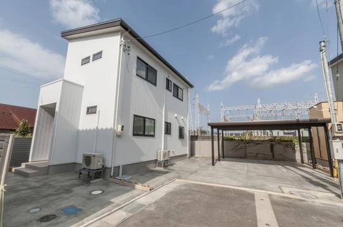
こんにちは。富山で自然素材にこだわるホンモノの家、フジ創アイノスです。 現在フジ創アイノスのモデルハウス2棟販売中です。 https://www.fujisou-ainos.com/eventinfo/711127181
続きを読む →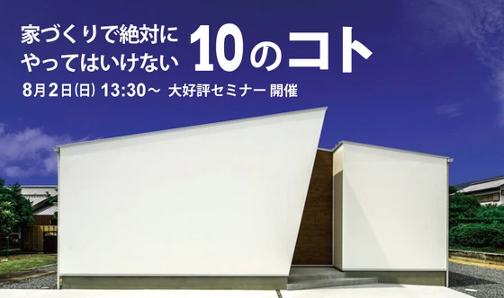
8月2日㈰高岡テクノドームにて、大好評セミナー『家づくりで絶対にやってはいけない10のコト』を開催いたします。 これまで全国で約1000組が参加した人気のセミナーです。 家は一生で一番高い買い物と言われますので、絶対に家
続きを読む →こんにちは。富山で自然素材にこだわるホンモノの家、フジ創アイノスです。 新型コロナウイルス流行の第2波が懸念されています。 フジ創アイノスでは、新型コロナウイルスの感染拡大の現状を考慮して、お客様の安全を最優先に考え、安
続きを読む →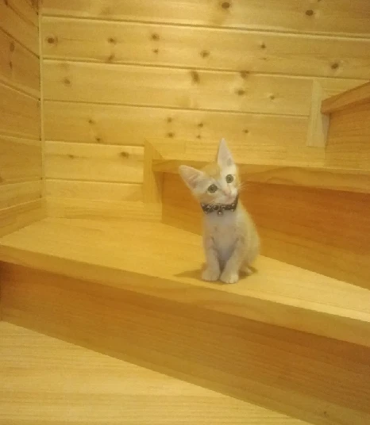
こんにちは。富山で自然素材にこだわるホンモノの家、フジ創アイノスです。 今日から4連休、皆様いかがお過ごしでしょうか。 コロナウイルスの影響で、まだ旅行や外出は控えている方が多いかと思います。 そんな中、家で楽しく過ごせ
続きを読む →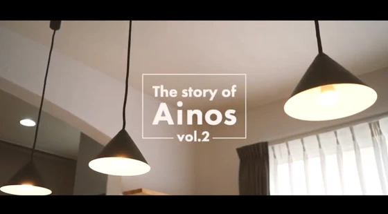
こんにちは。富山で自然素材にこだわるホンモノの家、フジ創アイノスです。 フジ創アイノスのYouTubeチャンネルが出来ました！ 最新の動画では、代表取締役の荒井一がアイノスを作った理由について語っています。 皆様に伝えた
続きを読む →こんにちは。富山で自然素材にこだわるホンモノの家、フジ創アイノスです。 富山県は全国的にみて自然災害の少ない県です。 下のランキングは、2011年～2020年まで各都道府県の地震が起きた回数を調べたものです。 富山県は全
続きを読む →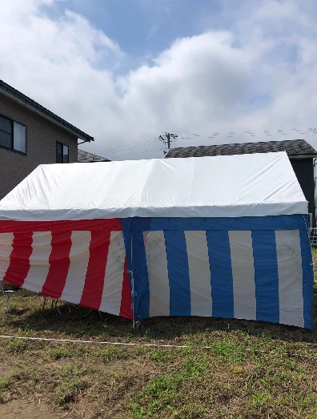
こんにちは。富山で自然素材にこだわるホンモノの家、フジ創アイノスです。 昨日、富山市蓮町で地鎮祭が行われました。 地鎮祭は、家を建てる前にその土地の氏神を祀り、土地を使用する許可をいただく儀式です。 そして工事の安全と家
続きを読む →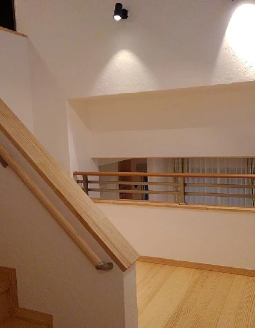
こんにちは。富山で自然素材にこだわるホンモノの家、フジ創アイノスです。 明日7/19（日）は完成見学会です。 まだご予約受け付けております。 自然素材、しっくい塗壁の心地よい家をぜひご体感ください。 今回のオーナー様は空
続きを読む →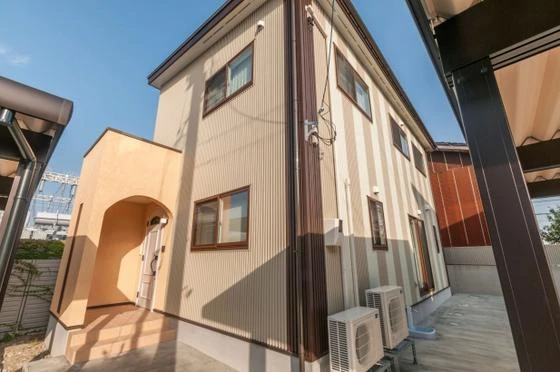
こんにちは。富山で自然素材にこだわるホンモノの家、フジ創アイノスです。 高岡市内免で販売中の二棟のモデルハウスは、自然素材の漆喰、無垢を標準仕様としているだけでなく、 どちらも太陽光発電システムでエネルギーを創る光熱費0
続きを読む →
こんにちは。富山で自然素材にこだわるホンモノの家、フジ創アイノスです。 『自然素材の家』と聞くと、「高い」というイメージをお持ちの方が多いのではないでしょうか。 実はクオリティが同じ『自然素材の家』でも、建てる会社によっ
続きを読む →
こんにちは。富山で自然素材にこだわるホンモノの家、フジ創アイノスです。 戸建住宅のほとんどは木造で建てられています。 森で育った木材が伐り出されて、住宅の構造材となります。 自然が生み出した木材は、実は住宅の構造用の材料
続きを読む →こんにちは。富山で自然素材にこだわるホンモノの家、フジ創アイノスです。 多くの住宅会社は、床に板張りのフローリングを使っています。 このフローリングには、木の様に見えても自然素材とは言えない建材もあります。 例えば紙に木
続きを読む →